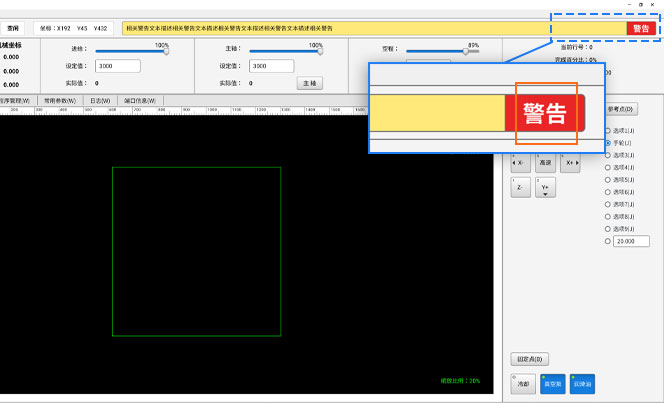

文字
文字是界面内的基础元素之一，是用户了解软件和完成操作的重要渠道，保持文字系统的一致和稳定，能更好的划分页面功能逻辑，提升用户体验和使用。
字体类型
文字定义了以下几种类型，从字体，字重，字号，行高、颜色五个属性明确规格。
常规文字，包括以下四种：
- 标题-普通，界面复合控件或弹窗的主题类型的文字字体，比如主界面标识自动&空闲状态的字体，比如坐标控件的轴名称和坐标类型的字体。
- 正文-普通，主界面菜单、复合控件或弹窗的正文字体，比如加工统计控件的字体，参数界面的参数具体名称及描述字体。
- 正文-强调，主界面、弹窗及各种控件内需要重点强调，引起用户重视的文字字体，比如坐标轴信息，紧停文字字体。
- 正文-次级，部分产品的主界面菜单、二级界面菜单、功能入口等由于受设计版面限制的文字字体。
特殊文字
- 标题，特殊的告警类字体，比如日志控件的警告标识。
- 正文，特殊按钮的文本字体，比如快捷键按钮如仿真加工按钮的文字字体，标识翻页功能按钮的文字字体。
以下是现有文字使用情况的划分与说明：
设计原则
- 即使公司各个产品线的产品形态不同，布局和整体设计不同，但同一产品/系统的字体类型要保持一致性。
- 少即是多，遵循极简法则，尽量用极少的风格进行字体的视觉设计，避免使用大量字体类型、比例、颜色和粗细来强调视觉或对比关系。
具体设计
常规文字
【标题-普通 】
- 主、子界面、弹窗内的常规标题，必须使用该字体。
- 字体规格：默认使用微软雅黑，字号：14pt；加粗，特殊情况下允许自定义。
应用场景
| 界面内应用1 | 界面内应用2 |
|---|---|
【正文-强调 】
- 主、子界面、弹窗内的需要重点强调的正文，可使用该字体。
- 原则上正文少用、慎用该字体，特殊情况下如：重点参数展示、重点结果/操作展示、紧停重要信息可以使用。
- 字体规格：默认使用微软雅黑，字号：14pt，加粗，特殊情况下允许自定义。
应用场景
| 界面内应用1（重点参数展示） | 界面内应用2（重点结果/操作展示） |
|---|---|
【正文-普通 】
- 主、子界面、弹窗内的正文，除强调外，必须使用该字体。
- 字体规格：默认使用微软雅黑，字号：14pt，常规，特殊情况下允许自定义。
应用场景
| 界面内应用1 | 界面内应用2 |
|---|---|
【正文-次级 】
- 原则上任何界面的正文，优先要求使用【正文-普通】字体，若该文本优先级低，且受空间限制的情况下，可使用该字体。
- 字体规格：默认使用微软雅黑，字号：12pt，常规，特殊情况下允许自定义。
应用场景
| 界面内应用1（文本优先级稍低） | 界面内应用2（空间受限-文本紧密排列） |
|---|---|
特殊文字
【标题-特殊】
- 原则上界面上的常规标题，优先要求使用【标题-普通】字体，若该标题需要重点引起重视，可以使用该字体。
- 当前仅“警告”模块的标题使用该文本，请勿随意使用本字体。
- 字体规格：默认使用微软雅黑，字号：20pt，加粗，特殊情况下允许自定义。
应用场景
| 界面内应用 |
|---|
|  |
【正文-特殊 】
- 原则上界面上的常规，优先要求使用【标题-普通】字体，若该标题需要重点引起重视，可以使用该字体。
- 原则上正文少用、慎用该字体，当前仅底部“快捷按钮”的内容使用该规格，请勿随意使用本规格。
- 字体规格：默认使用微软雅黑，字号：20pt，常规，特殊情况下允许自定义。
应用场景
| 界面内应用 |
|---|
【文本按钮】
- 使用文本按钮的情况，才可以使用，当前仅在翻页文本控件使用，少用或慎用。
- 字体规格：默认使用微软雅黑，字号：14pt，常规，文字下方添加下划线，特殊情况下允许自定义。
应用场景
| 界面内应用 |
|---|